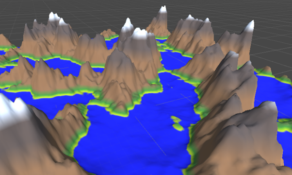
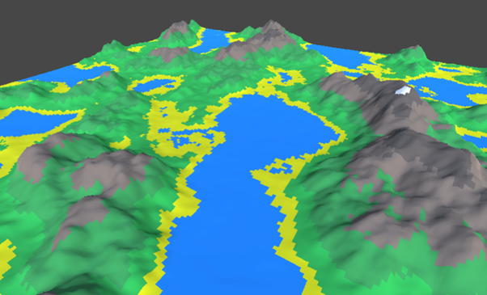

<link
  rel="stylesheet"
  href="https://use.fontawesome.com/releases/v5.8.2/css/all.css"
  integrity="sha384-oS3vJWv+0UjzBfQzYUhtDYW+Pj2yciDJxpsK1OYPAYjqT085Qq/1cq5FLXAZQ7Ay"
  crossorigin="anonymous"
/>

<link rel="preconnect" href="https://fonts.gstatic.com">
<link href="https://fonts.googleapis.com/css2?family=Roboto+Mono:wght@300&display=swap" rel="stylesheet">
<link href="https://fonts.googleapis.com/css2?family=Raleway:wght@600&display=swap" rel="stylesheet">
<link href="https://fonts.googleapis.com/css2?family=Roboto+Condensed:wght@300&display=swap" rel="stylesheet">
<link rel="stylesheet" href="info.css">

<head>
<meta name="viewport" content="width=device-width">
<title>Procedural Landmass Generation</title>
</head>

<main>
  <nav id="navbar">
    <h2 id = "projectTitle">Procedural Landmass Generation</h2>
    <a href="index.html">Back</a>
  </nav>

<p>During August 2021, I became intrigued with procedural landmass generation and created a project to generate basic textured landmasses that could also be interactive game environments, as such these chunks would also be given colliders to allow a player to walk on them. </p>
<p>Built in Unity 2021.4.14f1</p>
<p>Built in 1 month. August 2021 - August 2021</p>
  <button><a href="https://github.com/AdamHarris-GamesProgrammer/LandmassGeneration" target="_blank">GitHub Repository</a></button>
  <div id = "body">
    <h2>Features</h2>
    <div class="features">
      <div>
        <li>Using Unity CG to create a landscape shader</li>
        <li>Generating Heightmaps through Perlin noise</li>
      </div>
      <div>
        <li>Generating Falloff Maps</li>
        <li>Creating chunks with various Levels of Details to allow for optimisations based around where the player currently was in the map. </li>
      </div>
      <div>
        <div class="videoFrame"></div>
      </div>
      <div>
        <div class="videoFrame"></div>
      </div>
    </div>
    <div>
      <h2>Tweets</h2>
      <div class="tweets">
        <blockquote class="twitter-tweet"><p lang="en" dir="ltr">Implemented flat shading into my <a href="https://twitter.com/hashtag/procedural?src=hash&amp;ref_src=twsrc%5Etfw">#procedural</a> generation project. Looks nice, also added generated collision meshes allowing you to walk around <a href="https://twitter.com/hashtag/gamedev?src=hash&amp;ref_src=twsrc%5Etfw">#gamedev</a> <a href="https://twitter.com/hashtag/gamedevelopment?src=hash&amp;ref_src=twsrc%5Etfw">#gamedevelopment</a> <a href="https://twitter.com/hashtag/madeinunity?src=hash&amp;ref_src=twsrc%5Etfw">#madeinunity</a> <a href="https://twitter.com/hashtag/indiedev?src=hash&amp;ref_src=twsrc%5Etfw">#indiedev</a> <a href="https://twitter.com/hashtag/indiegamedev?src=hash&amp;ref_src=twsrc%5Etfw">#indiegamedev</a> <a href="https://twitter.com/hashtag/gaming?src=hash&amp;ref_src=twsrc%5Etfw">#gaming</a> <a href="https://twitter.com/hashtag/unity2020?src=hash&amp;ref_src=twsrc%5Etfw">#unity2020</a> <a href="https://t.co/rnvb5tmL8M">pic.twitter.com/rnvb5tmL8M</a></p>&mdash; Adam Harris (@AdamHarrisDev) <a href="https://twitter.com/AdamHarrisDev/status/1429725409701253121?ref_src=twsrc%5Etfw">August 23, 2021</a></blockquote> <script async src="https://platform.twitter.com/widgets.js" charset="utf-8"></script>
        <blockquote class="twitter-tweet"><p lang="en" dir="ltr">Some fun with procedurally generated landmasses. Including falloff maps, different colour regions for heights, seeding, and other tweakable values. <a href="https://twitter.com/hashtag/gamedev?src=hash&amp;ref_src=twsrc%5Etfw">#gamedev</a> <a href="https://twitter.com/hashtag/pcg?src=hash&amp;ref_src=twsrc%5Etfw">#pcg</a> <a href="https://twitter.com/hashtag/procedural?src=hash&amp;ref_src=twsrc%5Etfw">#procedural</a> <a href="https://twitter.com/hashtag/indiedev?src=hash&amp;ref_src=twsrc%5Etfw">#indiedev</a> <a href="https://t.co/XAIwlfYEvu">pic.twitter.com/XAIwlfYEvu</a></p>&mdash; Adam Harris (@AdamHarrisDev) <a href="https://twitter.com/AdamHarrisDev/status/1428718906127093768?ref_src=twsrc%5Etfw">August 20, 2021</a></blockquote> <script async src="https://platform.twitter.com/widgets.js" charset="utf-8"></script>
      </div>
    </div>
    <div>
      <h2>Challenges</h2>
      <p>Optimisation: Originally when developing the project I did not think about LOD for chunks or a max render distance and would just render a giant sector of chunks, while this did work it took up  a large amount of memory and took a long time to load, I added a render distance which meant any chunk that was further than 3 chunks from the player would not be generated, this improved memory usage and processing time. Each new thread generated would also be put onto a different thread which would improve the synchronicity of the project. </p>
      <p>Colliders: Generating colliders for each chunk was a massive computational undertaking as it takes a lot of processing on Unity’s Physics engine to create colliders during runtime, to get around this the amount of vertices in each collider were reduced so that they would only generate vertices if there was a change in gradient of the slope, this reduced the amount of vertices by a lot but would there was still the problem of far off chunks using a lot of processing performance to checking for collisions, to get around this the only active colliders would be the player’s current chunk and the next closest chunk this stop a large amount of background processing.</p>
    </div>
  </div>

  <footer id="footer">
    <h3 id="footer-text">Adam Harris &copy;2021</h3>
  </footer>
</main>
